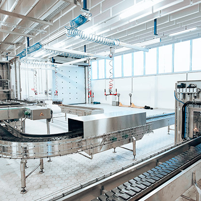
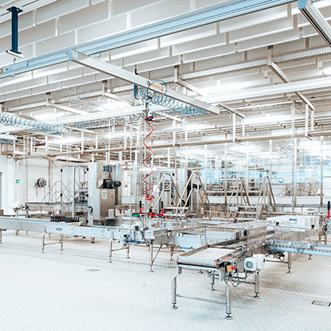
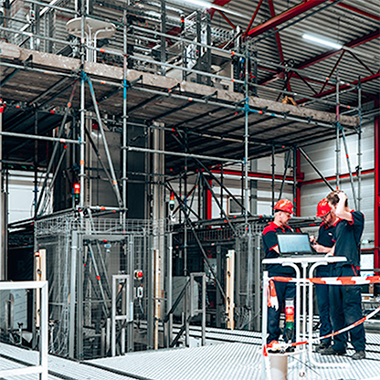
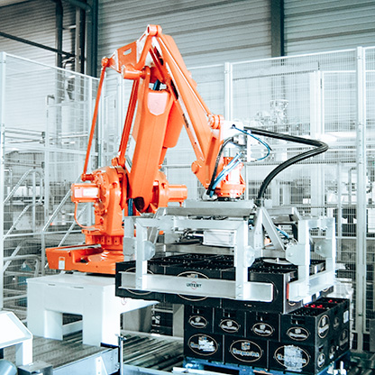
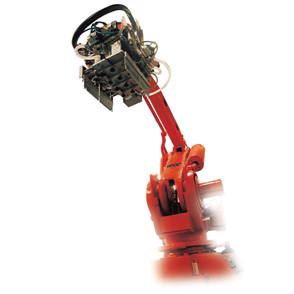
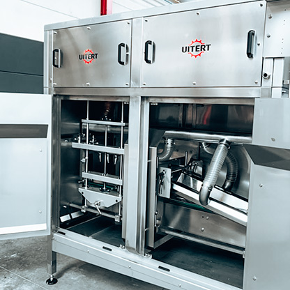
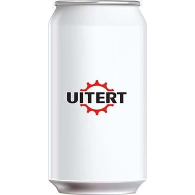

Op zoek naar een vul- of verpakkingslijn?
Wij bieden complete oplossingen voor uw productieproces — van producttransport tot handling en volledige lijnintegratie. Filter hieronder op uw product en zie direct wat bij u past.
Waar werkt u mee?
Kies uw verpakking en we lichten de relevante oplossingen eronder uit. De overige oplossingen blijven zichtbaar, zodat u niets mist.
Complete lijnoplossingen
Van ontwerp tot realisatie: wij integreren losse systemen tot één efficiënte, volledig op elkaar afgestemde productielijn.

Complete lijnoplossingen
Eén aanspreekpunt voor de volledige lijn: engineering, realisatie en naadloze aansluiting van alle systemen.
Vraag informatie aan
Lijnintegratie
Bestaande machines en systemen naadloos laten samenwerken binnen één centrale besturing.
Vraag informatie aan
Lijn upgrade
Bestaande lijn moderniseren voor hogere capaciteit, nieuwe producten of minder storingen.
Vraag informatie aan
Verplaatsen van een lijn
Complete productielijn demonteren, verhuizen naar een nieuwe locatie en weer in bedrijf stellen.
Vraag informatie aanProduct handling
Zorgvuldig en efficiënt omgaan met uw product — van het stapelen op pallets tot rinsen en drogen.

Qimarox Palletiser
Automatisch stapelen van dozen, trays en verpakkingen op pallets — tot 4.380 verpakkingen per uur.
Bekijk voorbeeldpagina
Depalletiser
Pallets automatisch en gecontroleerd leeghalen, als start van uw productieproces.
Vraag informatie aan
Robot Depalletiser
Robotgestuurd depalletiseren voor wisselende producten en verpakkingsformaten.
Vraag informatie aan
Robot Palletiser
Robotgestuurd palletiseren met flexibele stapelpatronen, ideaal bij wisselende productmixen.
Vraag informatie aan
Robot Inpakker
Robot die producten nauwkeurig in kratten, dozen of trays plaatst — snel en consistent.
Vraag informatie aan
Rinsers & Aircleaners
Reinigen en spoelen van verpakkingen vóór het vullen, voor een gegarandeerd schoon product.
Vraag informatie aan
Productdrogers
Drogen van producten of verpakkingen na het spoelen of vullen, vóór verdere handling.
Vraag informatie aanProduct transport
De onmisbare schakel tussen elke machine in uw lijn — onderverdeeld naar type verpakking.

Primaire verpakkingen
Transportbanen voor onder andere flessen, potten, blikken, pakken en fusten.
Vraag informatie aan
Secundaire verpakkingen
Transportsystemen voor onder andere dozen, trays, kratten en multipacks.
Vraag informatie aan
Pallets
Transportsystemen voor onder andere pallets, big bags, trolleys en IBC-containers.
Vraag informatie aanWaar we in het traject op letten
Efficiënte integratie
Naadloze aansluiting van onze systemen binnen uw bestaande lijn.
Duurzame technologie
Innovatieve oplossingen voor langdurige, betrouwbare prestaties.
Maximale ondersteuning
Wij begeleiden u in elke fase, van ontwerp tot implementatie.
Flexibele schaalbaarheid
Oplossingen die eenvoudig meegroeien met uw toekomstige productievraag.
Nog vragen over onze oplossingen?
Ja. We integreren graag bestaande installaties — ook van andere leveranciers — in een nieuw of aangepast lijnontwerp, zodat u niet alles hoeft te vervangen.
Dat verschilt sterk per project: van een enkele machine binnen enkele weken tot een volledige lijnintegratie die maanden engineering en realisatie vraagt. Na het adviesgesprek geven we een concrete planning.
Niet per se — bij een volledig nieuwe lijn starten we met een adviesgesprek en ontwerp. Bij een bestaande lijn is een lijnaudit vaak wel een waardevolle eerste stap om knelpunten en verbeterkansen scherp te krijgen.
Ja. Via inspecties, preventief onderhoud en een breed aanbod spare parts houden we uw installatie ook na oplevering betrouwbaar draaiend. Zie onze diensten.
Twijfelt u nog welke oplossing het beste past?
Vertel ons over uw product en proces — wij adviseren u kosteloos en vrijblijvend.